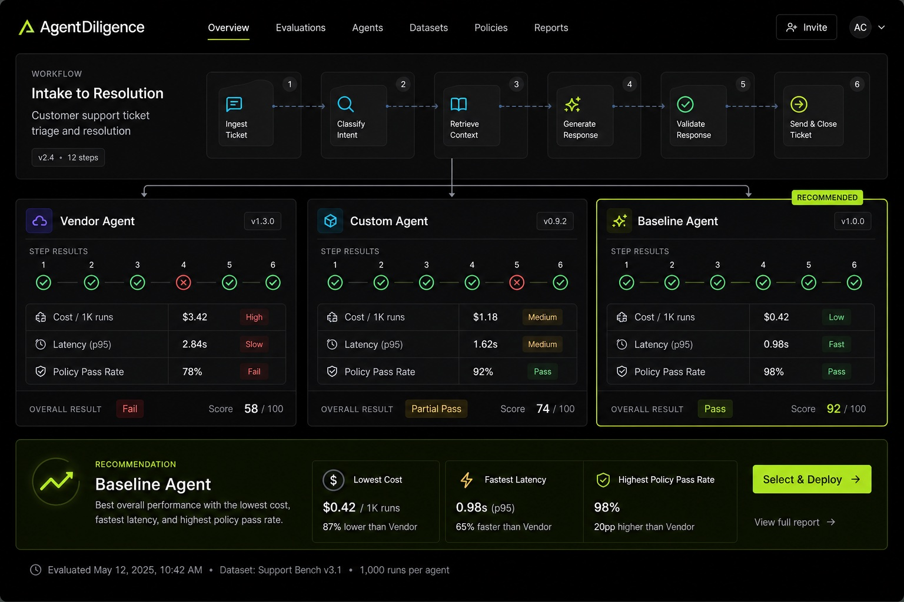

Test every agent before you trust one.
Run the same real workflow across vendor agents, your own build, and a baseline. See side-by-side evidence, get a recommendation, then buy with conviction.

Demos lie. Procurement guesses.
Vendor pitches show the happy path. Real work has policy exceptions, edge cases, tool failures, handoffs, latency constraints, and cost tradeoffs. Buyers need proof before the contract, not surprises after rollout.
The question is whether it survives your actual workflow, your policies, and your edge cases.
You need transcripts, final-state checks, failure modes, and a defensible recommendation.
Run vendor, custom, and baseline agents on the same job so the choice is comparative, not political.
A bake-off for the agents you are about to buy.
AgentDiligence turns a buyer workflow into a controlled comparison. The output is not a generic benchmark. It is evidence for your decision.
Define the job.
Bring the workflow you actually care about: support resolution, refund policy, onboarding, procurement, claims, or another high-value process.
Run the field.
Candidate vendor agents, your internal build, and a reference baseline get the same scenario set, constraints, and success criteria.
Get a verdict.
We package the evidence into a buyer-readable recommendation: automate, assist, human-gate, or do not deploy.
Every claim is clickable.
Do not settle for a dashboard full of vibes. Drill into what actually happened in each run — the transcript, policy match, tool behavior, final state, and cost to complete the task.
A report your team can actually use.
The deliverable is designed for buyers, not just builders: clear enough for procurement, specific enough for technical review, and concrete enough to challenge vendor claims.
Agent comparison report
Side-by-side results across candidates, with sample runs, policy failures, edge cases, cost/latency tradeoffs, and evidence level for each claim.
Pilot Custom Agent v3 with refund limits and mandatory human approval above £250. Re-test Vendor Agent after policy-handling configuration.
Decision-ready, not dashboard-only.
The point is to answer the buyer's question: which agent should we trust, where should we constrain it, and what needs to be fixed before deployment?
For teams buying or shipping agents into real workflows.
AgentDiligence sits before procurement and deployment — where the cost of choosing wrong is still avoidable.
Compare vendors before contract.
Replace pitch-driven selection with a controlled field test on your workflow.
Validate internal builds.
Know when your custom agent beats a vendor — and when it does not.
Set deployment boundaries.
Identify which tasks can automate, assist, or must stay human-gated.
Stop buying AI agents on vibes.
Run the same work through every candidate. Get the evidence before you sign, integrate, or expose customers to the agent.
Run your first comparison →